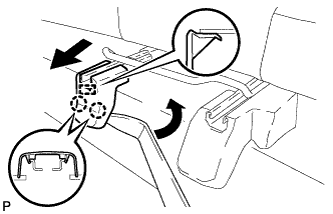
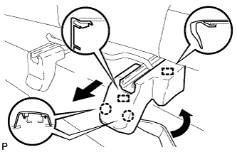
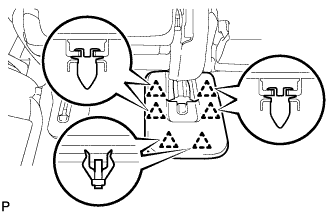
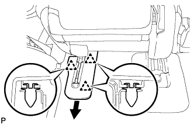
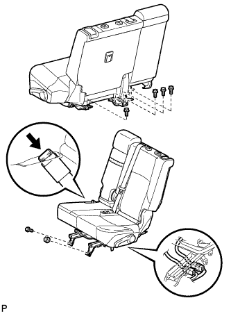

REAR NO. 1 SEAT ASSEMBLY (for 60/40 Split Slide Walk-in Seat Type LH Side) > REMOVAL |
| 1. DISCONNECT CABLE FROM NEGATIVE BATTERY TERMINAL |
| Condition | Waiting Time |
| Vehicle enrolled in G-BOOK system | 6 minutes |
| Vehicle not enrolled in G-BOOK system | 1 minute |
| 2. REMOVE REAR SEAT HEADREST ASSEMBLY |
Remove the headrest.
| 3. REMOVE REAR SEAT TRACK INNER BRACKET COVER |
|  |
Using a moulding remover, detach the 2 claws and guide, and then remove the cover.
| 4. REMOVE REAR SEAT OUTER TRACK BRACKET COVER |
|  |
Using a moulding remover, detach the 2 claws.
Move the cover in the direction of the arrow to detach the 2 guides, and then remove the cover.
| 5. REMOVE SEAT TRACK INNER BRACKET COVER LH |
|  |
Using a clip remover, detach the 6 clips and remove the cover.
| 6. REMOVE SEAT TRACK COVER LH |
|  |
Using a clip remover, detach the 3 clips and remove the cover.
| 7. REMOVE REAR SEAT ASSEMBLY LH |
|  |
Disconnect the center inner seat belt from the seat.
Disconnect the side airbag connector.
w/ Seat Heater System:
Disconnect the seat heater connector.
Remove the 5 bolts, nut and seat.